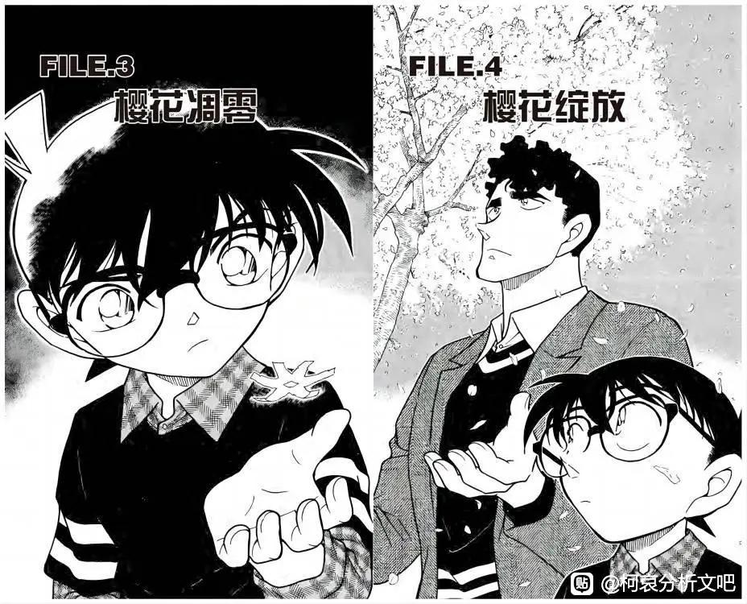
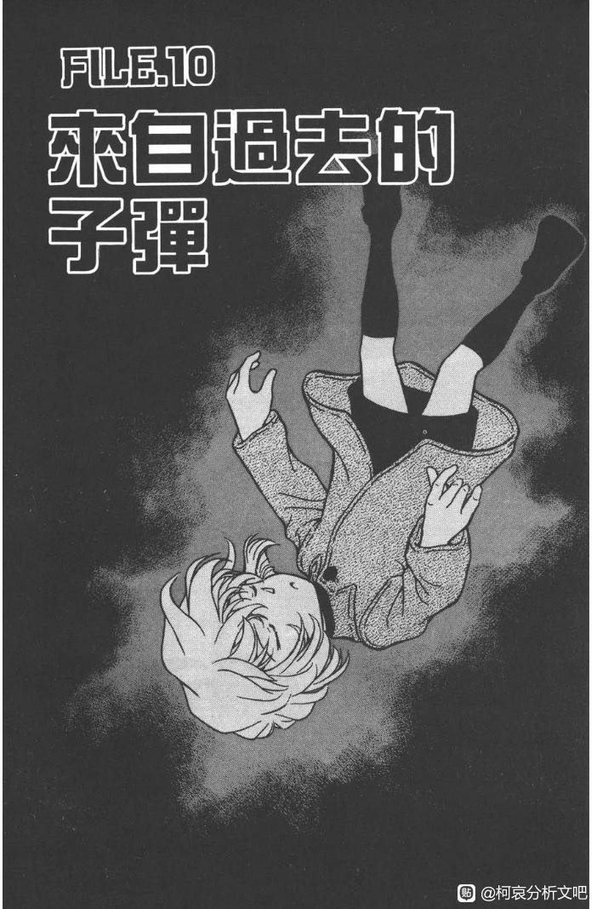

本来我是不支持错位论的，但是细思我自己看樱花班的过程，发现我作为读者第一次看的时候，竟然也出现了认错樱花和雪花的情况
樱花班的回忆，开头是在樱花树下散步，由于樱花引发的回忆（一看到樱花就会回想起……），所以我自然而然的就把回忆开头的几个场景当成了樱花飞舞
但是看到优作的话的时候，我才意识到，这里不是樱花而是雪花
漫画里的樱花和雪花真的很像，飘在空中的样子，而且因为是黑白的漫画，樱花和雪花都是白色，更加难以分辨
樱花班的回忆，开头是在樱花树下散步，由于樱花引发的回忆（一看到樱花就会回想起……），所以我自然而然的就把回忆开头的几个场景当成了樱花飞舞
但是看到优作的话的时候，我才意识到，这里不是樱花而是雪花
漫画里的樱花和雪花真的很像，飘在空中的样子，而且因为是黑白的漫画，樱花和雪花都是白色，更加难以分辨
第一印象归第一印象，细想其实有很多违和感。比如樱花花瓣不会从几层楼高的地方飘下来，飞得满天都是，樱花只是在樱花树下飘落
又比如真正的樱花飞舞的场景是这两个，仔细看可以看出来樱花花瓣的画法跟雪花的不同，樱花的形状是很明显的
又比如真正的樱花飞舞的场景是这两个，仔细看可以看出来樱花花瓣的画法跟雪花的不同，樱花的形状是很明显的
樱花和雪，两者都是在樱花班出现了的，但是读者第一印象会把雪当成樱花，之后才发现原来那里应该是雪，不是樱花
这也可以说是一种错位吧
如果错位论为真，那么读者想起自己认错樱花和雪花，对应角色想起自己认错了喜欢的人，真是很天才的设计啊
这也可以说是一种错位吧
如果错位论为真，那么读者想起自己认错樱花和雪花，对应角色想起自己认错了喜欢的人，真是很天才的设计啊
2023-10-20 05:55 | 平者深黑:本来我是不支持错位论的，但是这样的设计，不拿去写错位真的是可惜了啊，想到这里当场跳反了2023-10-22 13:09 | 谢无妄º:是真的。。2023-12-24 05:26 | 小石头小小😈:很天才也很浪漫

飘雪下的初遇，正好是冬天最晚到春初
时间正好是樱花班转学之前？这个时间对上就很微妙了
时间正好是樱花班转学之前？这个时间对上就很微妙了
2023-10-20 04:09 | 贴吧用户_0WaQGey:而再会篇作为柯哀的第一个和组织接触的事件又正好是雪天，不知道算不算一种对应2023-10-20 12:24 | 灰原哀😘😻:回复 贴吧用户_0WaQGey :有意思，有意思2023-10-22 21:32 | 贴吧用户_Q8t5KRC:回复 贴吧用户_0WaQGey :
哇!這是很經典的敘詭手法，如果不是平者大大眼尖發現櫻花跟雪花，我還以為那整個場景都是櫻花，竟然不曾注意到櫻花不會從那麼高的地方飄下來 
新一转过几次学？有希子说带新一去幼稚园的路上下的是雪吧
平新相遇也是在滑雪场，是不是也有暗示？
2024-03-03 03:21 | 温若湫💫:对哦，平为哀影来着

我一直以为优作说雪是指现在是春天来着
2023-10-20 05:12 | Chaos🌐🌸:因为之前看樱花班的时候发现优作粉丝们在用智能机而工藤夫妇用的是翻盖让我想起来之前看涟漪篇的时候是智能机2023-10-20 05:13 | Chaos🌐🌸:所以那句不合时宜的雪我没多做联想2023-10-20 05:35 | 平者深黑:优作问“刚刚那场不合时宜/有些迟的雪，已经变成雨了吗？”，说明刚刚是在下雪的。那个女儿回答：“没有，这是我以前的习惯”。说“没有”就是现在还是在下雪，“这”是指下雪打伞是以前的习惯2023-10-20 05:59 | Chaos🌐🌸:回复 平者深黑 :我的意思是说当时我以为这个是优作在说现在是春天，这个雪不合时节，没往初遇和错位想2023-10-20 07:47 | 明天过年了º:东京12-2月都下雪。所以可以确认这里的时间线在3月入学樱花班前2023-10-20 14:52 | 贴吧用户_GMSD67V:回复 明天过年了º :那个时间点毛利兰在郁金香班，樱花班是升学进入的，毛利小五郎调到本厅任职是兰樱花班时期刚开学，有希子带新一去新幼儿园上学（升＋转学）毛利小五郎受优作影响的开始2023-10-20 15:02 | 贴吧用户_GMSD67V:回复 明天过年了º :4到7岁毛利和工藤家有接触（除去母亲的关系，就剩新一和兰的联系）但是55卷博士说他们好久没一起玩了，所以两家关系不太好，少年事件篇后工藤家开始行动“破冰”有记载的有涟漪篇海水浴场，国中时期有希子参与集体活动，纽约篇寄机票给毛利兰。两家的亲密程度是工藤家主导
这里的绘画手法应该是刻意的以樱代雪吧
天才呀！这么一说确实，LZ真的好细致！我看到优作说雪化成雨都没反应过来那是❄️……真的活该我当了这么些年的CA悲观党
兰和哀也确实某种程度上来说一个像樱花一个像雪
2023-10-21 23:28 | bearaven:妖怪企划哀的形象就是雪女来着？雪女传说。这么想来刻意让兰一个人在状况外磕到的是……2023-10-21 23:43 | 贴吧用户_7Ne275C:回复 bearaven :我确实参考了这个企划，雪女哀太美了！虽然说周边可信度不高，但是联想到平新初遇的雪女传说以及四个人里只有兰状况外的画面，还是觉得挺有意思2023-10-21 23:45 | bearaven:如果真是这样，那也不是孤例。兰在红修篇又状况外跑去磕的是冲田和铁诸羽啊。新兰系本来就只能靠回忆和嗑药变大了，机会本就不多，背后却总是有哀的影子——说到底要解药除了平次临时代打的白干本来也离不开哀就是了。2023-10-21 23:52 | bearaven:回复 贴吧用户_7Ne275C :就来源而言可信度确实比不上原作，不过那个企划的选取感觉是读到原作的意象暗示的。新一选了天狗这点就让人觉得很懂嘛。2023-10-22 00:14 | 平者深黑:回复 贴吧用户_7Ne275C :平新滑雪场里，新一提到了小泉八云写的雪女，我去看了一下原文，可能是因为滤镜比较厚，实在要素过多2023-11-30 09:24 | 暗蓝heart:雪女恐吓了男主两次，但两次都没对他做什么，“阵雨般的雪花扑在脸上”，“从烟囱里消失”
初遇写雪女，雪女=哀，所以柯哀初遇

刚看到一个分析戴帽子却没有角可能暗示的是那其实不是小兰的分析，楼主这个雪花论直接让我豁然开朗。说明新志初遇论真的有可能存在柯南记忆错位的可能！！！！
很新颖的解读方式
难他天！
2023-10-20 07:59 | 平者深黑:他也许真的是个天才！
还有高手？
恋爱喜剧大魔王确实很厉害啊，青山的小细节很棒
这个算是明确提示
工藤新一的起点不是樱花
而是雪
是发生在雪天的、导致他转学的某个事件
工藤新一的起点不是樱花
而是雪
是发生在雪天的、导致他转学的某个事件
2023-10-20 14:27 | 贴吧用户_GMSD67V:有一个郁金香班时期的时间给青山填坑，按之前照顾一个寒假来看，有初遇的话应该是二学期末到第三学期。
厉害了，难道73真的留有后手
太细了
 细啊
细啊这个发现很有意思啊，动画好像没表现出来，那这个真的是漫画才有的提示了。
琴酒说志保很适合雪，13年前琴酒也在么
2023-10-20 12:29 | 贴吧用户_0WaQGey:搞不好真的在，志保的米花时期看时光胶囊的照片是很放松的，应该不是组织的人照顾她，这样的话米花时光的结束很可能就是被琴酒或者贝尔摩德之类的组织成员回收2023-10-22 00:18 | 烧饼右京:大雪纷飞的街道上，少年琴酒把挡在宫野志保前面的小新一打飞，这个可以有2023-10-22 14:35 | 贴吧用户_JQeDt32:回复 烧饼右京 :都能磕2023-12-14 07:43 | ▫白芽乌椹▫:回复 贴吧用户_JQeDt32 :这么一下顿时觉得琴少爷这种变态果然十三年前就该枪毙了啊！2024-01-12 22:33 | 贴吧用户_G7G52WW:回复 贴吧用户_JQeDt32 :不琴酒应该40多岁了。毕竟贝姐都50多岁了。2024-01-16 11:19 | 贴吧用户_53RaQ7D:回复 贴吧用户_G7G52WW :琴酒官方年龄29岁，13年前就是16岁2024-01-16 14:29 | 平者深黑:回复 贴吧用户_53RaQ7D :琴酒年龄有出处吗？2024-01-16 15:11 | 贴吧用户_53RaQ7D:回复 平者深黑 :好像之前看到有官方的图是这样说的，我看能不能找到2024-01-17 00:26 | 贴吧用户_53RaQ7D:回复 平者深黑 :我找遍了贴吧跟老福特还有一些其他网站都找不到图片，但是很奇怪说29岁的很多，看到一个在2015年的帖子说官方设定琴酒比雪莉大11岁，但是又有一个2023年的帖子说73没有设定琴酒的年龄2024-01-17 00:35 | 平者深黑:回复 贴吧用户_53RaQ7D :我印象中是没有明确过琴酒的年龄的。我能找到的是2018年的sdb black plus，Q57琴酒大约是32岁吗？答：看起来像是吗？

给个实锤
2023-10-20 12:38 | 就俺啊:“代表作品：樱的圈套”，是一个大佬给我指出的2023-10-21 04:09 | 蓝月哀:哎，这个就是歌野晶午的那本《樱树抽芽时，想你》。要说叙诡的话，阿婆的罗杰疑案比较有开创性和代表性，日系推理里剪刀男，杀戮之病，向日葵不开的夏天都比较有代表性，樱树这本其实评价不太高……我感觉73应该不是受到这本的启发2023-10-21 12:46 | 就俺啊:回复 蓝月哀 :谢谢科普，我也是经别人这么一说，我这么一查，发现百度唯一给了一个代表作品竟然和“樱”相关，很震惊🌚2023-10-22 13:12 | 谢无妄º:我糙。。。2023-12-04 09:31 | 白芷连翘:回复 蓝月哀 :我也觉得诡叙里剪刀男要比樱花树更代表性一点，我推荐别人看诡叙作品都是首推的剪刀男，确实写的很绝！

Sherry 雪莉
关于雪的一些整理，有些可能跟主题没什么关系，但是出于完整性都列出来了：
1994年，偶像密室杀人事件，三天后下雪。明美案，毛利兰说“我爸爸在雪山被活埋了”
1995年，卡拉OK厅杀人事件，江户川柯南绑架事件，下雪
1996年，雪山山庄杀人事件（将棋桌布暗号），下雪。咖啡厅杀人事件，柯南回忆前者
1997年，滑雪别墅杀人事件（毛利兰指认老师是犯人），下雪
1998年，魔术爱好者杀人事件，下雪
1999年，送毛衣，再会篇，下雪。采松茸，老猎人回忆下雪
2000年，神秘乘客在去滑雪的路上
2001年，情人节的真相，下雪
2002年，雨城琉璃，遗留的无声证言，与黑衣组织的接触，下雪。金钱买不到的友情，回忆中毛利兰提到没有钱没法和园子去滑雪
2003年，四辆保时捷，下雪（动画改成下雨）
2004年，无
2005年，再也回不去的二人，下雪。虚假的婚礼，案件角色回忆下雪的深夜。园子的红手帕，电视剧男女主相会在雪中
2006年，坚不可摧的雪人，下雪。平次滑雪场回忆（打电话聊天是春天，樱花）
2007年，风林火山，提到敢助雪崩事件
2008年，真凶送来的礼物，榎本梓的哥哥发来雪天的照片
2009年，侦探团VS强盗团，下雪。赤壁，雪中之笋，回忆敢助雪崩事件
2010年，无（夏天提及13年前的暴风雪）
2011年，无
2012年，高木被绑架，下雪。泡沫、热气与烟，少侦去滑雪。密室中的柯南，案件回忆中有人死在雪中
2013年，现场的邻居是前男友，案件角色回忆4年前滑雪
2014年，镰鼬，下雪（年末）
2015年，樱花班
2016年，安室提到自己喜欢《雪之堕天使》
2017年，无
2018年，无
2019年，36格的完美犯罪，下雪
2020年，无
2021年，不吉利的结缘，有积雪和雪人
2022年，无
2023年，无
人名：岳野雪、籏本美雪
我曾经说过漫画里的季节基本上是按照现实时间来的，在2017年青山长期休刊之前，基本上每年都有雪
1999年-2003年，新出案后送毛衣，再会篇，神秘乘客，情人节的真相，板仓卓案，与黑衣组织的接触，四辆保时捷，这一系列主线/柯哀感情戏相关的案子都与雪有关，从再会到满月（24-42卷）这一段也是我觉得柯哀情感发展最重要的阶段
我在做时间线整理的时候，基本上是按照樱花=春天，下雪=冬天的规则整理的。樱花和雪共同出现的只有13年前的樱花班和平次的滑雪场回忆
滑雪场回忆是在樱花树下展开的：一个是现在的春天，一个是回忆中3年前的冬天。滑雪场回忆之前他们都不知道彼此曾经相遇过
1994年，偶像密室杀人事件，三天后下雪。明美案，毛利兰说“我爸爸在雪山被活埋了”
1995年，卡拉OK厅杀人事件，江户川柯南绑架事件，下雪
1996年，雪山山庄杀人事件（将棋桌布暗号），下雪。咖啡厅杀人事件，柯南回忆前者
1997年，滑雪别墅杀人事件（毛利兰指认老师是犯人），下雪
1998年，魔术爱好者杀人事件，下雪
1999年，送毛衣，再会篇，下雪。采松茸，老猎人回忆下雪
2000年，神秘乘客在去滑雪的路上
2001年，情人节的真相，下雪
2002年，雨城琉璃，遗留的无声证言，与黑衣组织的接触，下雪。金钱买不到的友情，回忆中毛利兰提到没有钱没法和园子去滑雪
2003年，四辆保时捷，下雪（动画改成下雨）
2004年，无
2005年，再也回不去的二人，下雪。虚假的婚礼，案件角色回忆下雪的深夜。园子的红手帕，电视剧男女主相会在雪中
2006年，坚不可摧的雪人，下雪。平次滑雪场回忆（打电话聊天是春天，樱花）
2007年，风林火山，提到敢助雪崩事件
2008年，真凶送来的礼物，榎本梓的哥哥发来雪天的照片
2009年，侦探团VS强盗团，下雪。赤壁，雪中之笋，回忆敢助雪崩事件
2010年，无（夏天提及13年前的暴风雪）
2011年，无
2012年，高木被绑架，下雪。泡沫、热气与烟，少侦去滑雪。密室中的柯南，案件回忆中有人死在雪中
2013年，现场的邻居是前男友，案件角色回忆4年前滑雪
2014年，镰鼬，下雪（年末）
2015年，樱花班
2016年，安室提到自己喜欢《雪之堕天使》
2017年，无
2018年，无
2019年，36格的完美犯罪，下雪
2020年，无
2021年，不吉利的结缘，有积雪和雪人
2022年，无
2023年，无
人名：岳野雪、籏本美雪
我曾经说过漫画里的季节基本上是按照现实时间来的，在2017年青山长期休刊之前，基本上每年都有雪
1999年-2003年，新出案后送毛衣，再会篇，神秘乘客，情人节的真相，板仓卓案，与黑衣组织的接触，四辆保时捷，这一系列主线/柯哀感情戏相关的案子都与雪有关，从再会到满月（24-42卷）这一段也是我觉得柯哀情感发展最重要的阶段
我在做时间线整理的时候，基本上是按照樱花=春天，下雪=冬天的规则整理的。樱花和雪共同出现的只有13年前的樱花班和平次的滑雪场回忆
滑雪场回忆是在樱花树下展开的：一个是现在的春天，一个是回忆中3年前的冬天。滑雪场回忆之前他们都不知道彼此曾经相遇过
2023-10-20 14:31 | 贴吧用户_GMSD67V:樱花班时期，兰是升学的，前面是郁金香班2023-10-21 20:24 | 妮是額滴神啊🌱:最後這一段！！「櫻雪都有就會有不知道彼此曾經相遇過 」⋯蹲2023-12-30 06:35 | 柚子232323:新一和平次是在滑雪场初遇吧？会不会对应了新一和志保……2024-01-12 21:25 | 白衣😳:我一直觉得36宫格没过几年，这尼玛都是5年前的了，有生之年真的能看到结局么

如果新志初遇是在樱花班之前不久的雪天，雪代表志保，樱花班的开头就是雪
新一转学到了保育园的时候就不在下雪了，是否可以对应志保离开了呢？
关于樱花班这场雪的用途，在剧情中只是作为江舟女儿并不是北海道本地人的一个线索，设计剧情的角度来讲，他也可以让这个女儿去别的地方，比如京都、冲绳（雪莉通讯社说过修学旅行最受欢迎的地点第一是冲绳，第二是北海道）。江舟女儿住在某地但是没有某地的口音或者语言习惯，同样可以看出来她可能不是本地人
新一转学到了保育园的时候就不在下雪了，是否可以对应志保离开了呢？
关于樱花班这场雪的用途，在剧情中只是作为江舟女儿并不是北海道本地人的一个线索，设计剧情的角度来讲，他也可以让这个女儿去别的地方，比如京都、冲绳（雪莉通讯社说过修学旅行最受欢迎的地点第一是冲绳，第二是北海道）。江舟女儿住在某地但是没有某地的口音或者语言习惯，同样可以看出来她可能不是本地人
2023-10-21 08:00 | 世界上没有真理:好奇櫻花篇一開始的優作簽售會到底是在北海道還是東京?2023-10-21 08:10 | 平者深黑:我的理解是在东京。她之前参加过一次北海道的签售会，这次是在东京。追星的人，全国各地追签售会也是正常操作2023-10-21 08:28 | 世界上没有真理:回复 平者深黑 :原來如此，那麼那次參加的北海道簽售會有沒有可能跟新志初遇有關？還是只是把這個女生的背景帶出來而已？2023-10-21 21:12 | 贴吧用户_GMSD67V:回复 世界上没有真理 :高木被绑，涉及的地点也是北海道，下雪了，警察手册（樱花）丢了，被警察救。
我的天，刚子真的在下一步很大的棋，难怪他天天笑呵呵的，他是胸有成竹在憋大招啊。
现在越看各位大佬分析越觉得是初遇论是真的，刚圣搞快点，我要看到血流成河
2024-01-09 00:46 | 修行中的空灵💫:天降青梅这个无敌buff要是拿到手，我都不敢想柯哀还怎么输

+3
天才
几张圣诞哀和雪花
2009年：
能否寄到始终纯白的
你的身边呢……
来自无法彻底变成白的
灰色圣诞老人……
2009年：
能否寄到始终纯白的
你的身边呢……
来自无法彻底变成白的
灰色圣诞老人……
2010年：
就这样被雪埋起来的话……
心情也能变成
纯白的吗……
来自无法彻底变成白的
灰色圣诞老人……
就这样被雪埋起来的话……
心情也能变成
纯白的吗……
来自无法彻底变成白的
灰色圣诞老人……
2011年：
想一直沉浸在冬日夜空的氛围中
可是白雪却把黑色的心情
变得暖洋洋的……
来自无法彻底变成黑的
灰色圣诞老人……
想一直沉浸在冬日夜空的氛围中
可是白雪却把黑色的心情
变得暖洋洋的……
来自无法彻底变成黑的
灰色圣诞老人……
2012年：
从漆黑的夜空飘然落下
在掌心的温度中融化
无数的白色天使……
没关系
会觉得热的
只有一开始而已……
来自想变成雪的灰色圣诞老人……
从漆黑的夜空飘然落下
在掌心的温度中融化
无数的白色天使……
没关系
会觉得热的
只有一开始而已……
来自想变成雪的灰色圣诞老人……
前来给深黑大佬顶顶
圣诞哀这几张的文字是分别之后小志宝想跟新一说的话吧
2023-10-21 08:06 | 平者深黑:因为善良所以“无法彻底变成黑”，但也没办法脱离组织，所以说“无法彻底变成白”，所以后来她变成了灰色。青山说过灰原哀的“灰”是柯南和黑衣组织之间的意思2023-10-21 08:07 | 平者深黑:2014/03/142014月刊柯南新闻2 青山访谈——灰原哀も、最初は黒ずくめの組織側の人間だったわけですが、最初からあのような展開で用意していたのですか——そうですね。２巻でもう、シルエットですけど出ていますから、コナンと黒ずくめの組織の間だから、灰色＝グレーなんですよ2023-10-21 08:08 | 平者深黑:灰色＝グレーなんですよ。——灰原哀一开始也是黑衣组织那边的人，一开始就是按照那样的发展来准备的吗？是啊。第二卷已经有剪影了，因为是在柯南和黑衣组织之间，所以是灰色 = Gray2023-10-21 21:19 | 贴吧用户_GMSD67V:回复 平者深黑 :很有意思的是，青山用柯南照顾哀一个寒假把兰（樱花）挡在雪的领域外了，同时，兰和新一没有一起过圣诞节和日本新年（柯南元年）变小前一年的圣诞节兰也没有收到新一的礼物。 圣诞节和日本新年是在日本放寒假这个时间点（第二学期结束）
有说法啊
明年m27的主舞台是北海道的函馆，结合那张1分为2的红心1扑克牌，怎么明年还有大活
2023-11-18 10:53 | 魔羯的眼:那图不是同人吗2023-11-29 13:28 | Yao_CPT:回复 魔羯的眼 :那是m27預告
给楼主补一个小设定啊，时间胶囊篇里明美说说小志保是因为太聪明才去美国读书的，那至少在13年前姐妹俩都还没有对a药什么的有过度了解，到处搬家可能是照顾姐妹俩的人主意，所以小志保去美国可能不是什么强迫手段，就是有人要带小志保走，而照顾志保的人（大概率是若狭）没有办法反抗，最后小志保应该是和小新一应该是和平告别的。小志保搬走后，小新一收到刺激郁郁寡欢，所以有希子和优作趁着开学期带小新一去了另外一家幼稚园
2023-11-16 03:17 | 露滴💧7532:照顾小志保的人不太可能是若狭，时间胶囊篇里若狭听到宫野明美和宫野志保的名字还很惊讶，然后把开始把小哀和志保联想。如果真的是若狭照顾小时候的志保应该一开始就认出来了才对2023-11-16 03:24 | 乐以轩🌟:回复 露滴💧7532 :那若狭可能就是小新一和小志保原来的幼儿园班主任，很喜欢他们两个，结果其中一个出国留学了，另一个转别的幼儿园了，让若狭很难过2023-11-18 07:51 | 婆桫椤-:回复 乐以轩🌟 :2023-11-19 03:07 | 乐以轩🌟:回复 婆桫椤- :被朗姆追杀以后，逃回日本不行吗2024-02-05 04:40 | 林中的熊宝宝🐨:和平告别基本不可能，已经有大佬发现暗示初遇的漫画篇章柯南左脸颊有受伤，而且相关卷的内容都没有柯南受伤的内容，非常巧2024-02-05 04:41 | 林中的熊宝宝🐨:而且和平告别的话，那小新一转学又怎么解释？为什么要转去新的幼儿园？
还有就是毛利小五郎和妃英理应该是有住过正常的房子，后来二人分居了小五郎才买了事务所那栋楼，我想的是可能一开始毛利家和工藤一家住的地方很远，所以两家没什么来往，后来毛利父女搬家以后才离工藤家很近，所以在幼稚园方面可能真的存在两个幼稚园，工藤家和毛利家都选择了离自己家比较近的幼稚园，后来因为志保的缘故才让小新一去了比较远的幼稚园，并在那里遇到小兰
还有就是我的个人猜测，如果真的有两家幼稚园的话，那么所用的名牌应该是不一样的，就想樱花班就樱花名牌，郁金香名牌，小新一最一开始的名牌可能是一个星星名牌，然后依次往上是月亮名牌，太阳名牌，因为星星和樱花太像了，所以导致小新一记忆错乱
2023-11-25 12:55 | 易生玺爱一兆年:真的，星星还和hoshi对得上2024-02-05 09:02 | 迪迪巴巴💕:有可能
关于“雪”的一个点，翻访谈的时候看到的：青山说M15设置在雪山是他的主意
出自《Otona Fami》2011年6月号，青山刚昌老师访谈
网页链接
M15可以说是M26之前的剧场版中，柯哀浓度相当高的一部了
出自《Otona Fami》2011年6月号，青山刚昌老师访谈
网页链接
M15可以说是M26之前的剧场版中，柯哀浓度相当高的一部了
这个想法有意思啊，刚子搞快点漫画里另一个经典认错人的剧情是白鸟把笠仓当成了小时候送他纸做的樱花的女孩（小林）。在他的回忆中，女孩把纸吸管做的樱花花环装饰在可乐杯上送给他，对他说樱花是正义之花，警察的警徽也是樱花的形状，这鼓励了白鸟成年后去当了警察，白鸟认为那个女孩是他的“命运之人”。白鸟在做了警察之后遇到了笠仓，笠仓送了他装饰着纸花环的可乐杯，这让白鸟误以为笠仓是当年的那个女孩
但是当我们对比小林和笠仓做的纸花，我们可以发现细节上的不同：小林给白鸟的是花瓣圆润，顶端有内凹的5瓣的樱花；而笠仓送给白鸟的是花瓣像直线一样的，6瓣的，形似雪花的纸花
但是当我们对比小林和笠仓做的纸花，我们可以发现细节上的不同：小林给白鸟的是花瓣圆润，顶端有内凹的5瓣的樱花；而笠仓送给白鸟的是花瓣像直线一样的，6瓣的，形似雪花的纸花
2023-11-14 16:27 | 平者深黑:白鸟回忆篇的雪花形纸花是 @小淘气流星雨 的发现2023-11-14 18:39 | 世界上没有真理:回复 平者深黑 :真的有五個和六個的差別，大大們都好強！！！2023-11-16 06:25 | 挽桜🌸:卧槽！2023-12-18 11:58 | 不折风骨🌟:我超2023-12-22 11:23 | 贴吧用户_0bDS2EM:其实还有佐藤警官；虽然佐藤警官肯定会“你到底在说什么”2023-12-30 06:23 | 🍁傻敷敷的小颜:还带着眼镜？
白鸟认错人的这段剧情有3话。三话的封面是：柯南拿着装饰着樱花形纸花的杯子喝可乐，柯南用手接住飘落的雪花形纸花，白鸟用手接飘落的樱花
再会篇（24卷）的封面，柯南用手接住飘落的雪花（哀）
白鸟伸手接的是樱花，暗示他的命运之人是送他樱花的小林，不是送他雪花的笠原；柯南用手接的是雪花，暗示他的命运之人是那个在雪季遇到的女孩，而不是在樱花班遇到的那个
再会篇（24卷）的封面，柯南用手接住飘落的雪花（哀）
白鸟伸手接的是樱花，暗示他的命运之人是送他樱花的小林，不是送他雪花的笠原；柯南用手接的是雪花，暗示他的命运之人是那个在雪季遇到的女孩，而不是在樱花班遇到的那个


2023-11-18 20:12 | mangomengke07:樱花凋零，然后接雪花，妙啊2023-12-22 00:59 | 2JINS🔥:回复 平者深黑 :woc妙啊妙啊2023-12-30 06:25 | 🍁傻敷敷的小颜:鸡皮疙瘩起来了2024-01-09 00:49 | 修行中的空灵💫:后面那张真像天空之城男主接女主的那段2024-01-11 10:36 | 贴吧用户_GWX1MX5:2024-01-18 03:21 | 允銮:点一首《此生不换》 记忆是条长线 盘旋在天边 沉浮中以为情深缘浅 你再度出现 我看见誓言 承诺在水天之间2024-02-05 09:04 | 迪迪巴巴💕:妙啊

如果不细看，有几个人看出来了漫画中樱花和雪花的区别呢？我作为读者两次分不清樱花和雪花：宏观的樱花班，微观的白鸟回忆篇。那么乍一听不怎么合理的新一认错人的假说，也显得顺理成章了起来。可能青山就是想这么对读者说：你觉得新一认错人不合理吗？可是你不也认错了樱花和雪花吗？（笑）
2023-11-16 03:20 | 露滴💧7532:有内味了2023-11-18 05:48 | 婆罗洲老斑鸠:（笑）2023-12-10 23:23 | ZuccaSun:当时看动画很奇怪 为什么变成雪天了 现在明白了 原来漫画一直看错了
关于白鸟回忆篇的第二个封面，他本来可以不画成柯南伸手去接雪花的动作的。剧情中是白鸟打开笔记时，他夹在笔记里的一朵纸花飘落到了地上，柯南试图捡起来，而不是柯南伸手去接住从空中飘落的纸花。既然封面柯南这个伸手接飘落的雪花形纸花的动作不是写实，那么我们自然可以去推测“伸手去接”这个动作的象征意义
🧐-好棒的分析。
好棒的分析。我的天分析的太棒了！！！初遇论快给我画！！！
沃草太牛了，初遇論感覺好有可能性啊
支持 很有道理
很有道理动画化怎么样的？这段是已经出了还是还没出来着（
这是什么文学大师
有道理！
很久没看过这么震撼又合理的推理了！上一次还是南英的 love is 0
绷不住了
顶
顶！！！
太会了，我真的来贴吧来晚了
好牛啊
想起m15有一段情节，少侦给小林老师选纪念品，小哀挑了一个写着“i❤️白鸟”的马克杯
太强了，狠狠的支持
厉害！！！
天才！
这么看第三张图片 新一家的屋顶还有积雪诶
难道73真的是个天才
卧槽。。。
难道青山真是天才？
太强啦！！太强啦！！！刚圣！
那新志初遇刚好是在雪季的平安夜 刚好小哀未被公开的生日很可能就是圣诞节
刚好小哀未被公开的生日很可能就是圣诞节
刚好小哀未被公开的生日很可能就是圣诞节新剧场版预告有从樱花变雪花的动画
2023-12-29 11:28 | 暗蓝heart:好好好2023-12-29 12:08 | 平者深黑:网页链接 根据日本网友的分析，预告里土方岁三的场景应该是冬天，有雪景；现在的时间是春天，有樱花。但是因为预告无哀，我暂时不认为M27跟这个帖子的论点有关2023-12-30 06:34 | 🍁傻敷敷的小颜:回复 平者深黑 :我看漫画现在不是穿得很厚的冬天吗？m27又春天了？那看来想写到圣诞节的大活可能又遥遥无期了2024-01-08 14:33 | 贴吧用户_0QebN4U:回复 🍁傻敷敷的小颜 :m27剧本应该是早就确定了吧，m26不是21年确定的？2024-01-08 18:39 | 🍁傻敷敷的小颜:回复 贴吧用户_0QebN4U :但时光胶囊也不是春天啊，时间线半年快一年了，第一集就是冬天2024-02-05 03:29 | 即将02的废物月:回复 平者深黑 :预告图上有了，而且还背了包
看吧里的分析和推测我是越来越着急啊，青山好多东西没交代，这老是拖更有生之年能不能看到完结呀
难他天
这个犯人说的话才非常蹊跷啊
难他天
难道青山真是天才？
灰原未公开的生日，如果是圣诞节，下雪，初遇论那将是绝杀
青山刚圣，草蛇灰线，伏脉千里
真不错
可是百鸟最终真正的初恋是拿着樱花环的小林 而不是那个做成雪花环的女人
2024-01-12 20:54 | 平者深黑:File.688封面柯南手上接的是雪花，24卷封面也暗示他接住志保。白鸟命运之人的是白鸟的，跟柯南的命运之人是樱还是雪又没关系2024-01-13 05:13 | 贴吧用户_Q4eCR5W:错位论得结合初遇论看，本质都是第二位被错位成第一位，最终发现第一位的故事
看完麦子的视频，樱花雪花这么相似，小志保当时不会有个雪花名牌吧…
2024-02-05 04:49 | 林中的熊宝宝🐨:也可能是星星！！！星星和樱花雪花也非常像！！！
我也认为有问题，设定直接入学两个人相识也可以呀，为啥非加一个转学的设定呢
不知道这个是不是真的，在柯南主吧那里看到的
2024-01-17 00:42 | 平者深黑:是2023年对话日说的：Q.ジンとウォッカの年齢って決まってますか？ 青山：ねぇ(笑)何歳だろうね、あいつらね(笑)まぁ皆さんが想像する年齢で良いですよ(笑)決めちゃうと首がしまるんで、自分の(笑)
原来这就是樱花雪花论
看到一张以樱雪为主题同人图
【【SAI2/PS】【柯哀】“把雪花看错成了樱花”-哔哩哔哩】 https://b23.tv/iIMEdEk
【【SAI2/PS】【柯哀】“把雪花看错成了樱花”-哔哩哔哩】 https://b23.tv/iIMEdEk
最后一张图，若狭老师那个是哪一话
厉害👍🏻 而且白林之间 灰原的帮助还是挺大的 她挺喜欢小林老师的
54卷，伸手接住雪花的柯南
我看到吧里有人提到《太阳、月亮和星星》的星星是六角星这点，让我想到了雪花曲线
下面是接近于同人的一些妄想：
我小学四年级的时候在数学课本上看到过雪花曲线，当时没事做就在书的最后的空白页上画这个雪花……所以也不是不可能有这样的故事？志保看到明美的数学课本，因为对雪花曲线的好奇而试图在草稿纸上一边画这个图案一边思考，然后这张纸（因为一些我编不出来的原因，案件和暗号可以往这里塞，草稿纸上出现暗号什么的也很正常吧）到了新一手上
下面是接近于同人的一些妄想：
我小学四年级的时候在数学课本上看到过雪花曲线，当时没事做就在书的最后的空白页上画这个雪花……所以也不是不可能有这样的故事？志保看到明美的数学课本，因为对雪花曲线的好奇而试图在草稿纸上一边画这个图案一边思考，然后这张纸（因为一些我编不出来的原因，案件和暗号可以往这里塞，草稿纸上出现暗号什么的也很正常吧）到了新一手上
我的天！如果这样的话，那真的很棒！！！
大佬
太优秀了